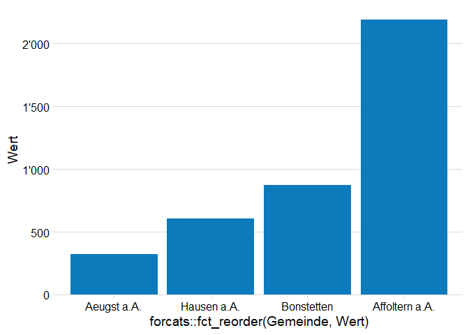

Mit {biviz} können häufig verwendete Datenvisualisierungen mit einfachen Funktionen erstellt werden. {biviz} stellt insbesondere Datenvisualisierungen, die oft im Bereich Business Intelligence (BI) verwendet werden, zur Verfügung. Das Paket implementiert Trends der Datenvisualisierung, wodurch sich das Paket auch für andere Zwecke eignet. In {biviz} werden {ggplot2} Wrapper zur Verfügung gestellt, welche die gängigen Datenvisualisierungen erzeugen. Dies hat den Vorteil, dass bei Standardgrafiken die Datenvisualisierung nicht Schicht für Schicht programmiert wird, wie es beim {ggplot2} Framework vorgesehen ist. Eine Zeile Code reicht, um eine Datenvisualisierung zu erstellen. Da das Paket auf {ggplot2} aufbaut, kann das erzeugte Objekt zu einem späteren Zeitpunkt dennoch angepasst werden. Um die Wrapper schlank zu halten, werden bei den meisten Funktionen in {biviz} die Daten vor der Übergabe in die Funktion so aufbereitet, dass keine Berechnungen innerhalb der Visualisierungsfunktion vorgenommen werden müssen. Ausnahmen mit komplexen Berechnungen sind in der Dokumentation vermerkt. Die Datenvisualisierungen orientieren sich am Buch Data Visualization von Claus O. Wilke
üìì Mehr Details zur Entwicklung des Pakets findest du in meiner Masterarbeit.
Installation
Das Paket biviz kann direkt von GitHub installiert werden:
# install.packages("devtools")
devtools::install_github("tricktracktriu/biviz")Datenvisualisierungsfamilien
Die Visualisierungen sind in 4 Gruppen (amounts, distributions, proportions und time series) aufgeteilt und folgen immer der gleichen Syntax. Jede Funktion startet mit plot_*(), anschliessend wird die Gruppe definiert plot_amounts_*() und am Ende wird die Form angegeben plot_amounts_grouped().
In der Gruppe amounts sind jene Datenvisualisierungen zusammengefasst, die Mengen abbilden. Dabei werden die Zahlenwerte von Kategorien bzw. deren Anzahl in einer Variable dargestellt. Die Kategorien können zusätzlich einer Gruppe zugeordnet werden. Dazu werden Variablen verwendet, welche die Gruppenzugehörigkeit definieren.
Bei distributions werden Verteilungen innerhalb einer Variable dargestellt. Dazu können unterschiedliche Methoden verwendet werden, welche je nach Ausgangslage unterschiedliche Vorteile mit sich bringen. Bei den Datenvisualisierungen zu Verteilungen lohnt es sich verschiedene Grafiken auszuprobieren, um ein möglichst akkurates Bild der Daten zu erhalten. Die Funktion plot_distributions_raincloud() verfolgt beispielsweise das Ziel, einen gesamthaften Überblick (inkl. Rohdaten) zu präsentieren. Dies passiert indem verschiedene Layers (Boxplot-, Violin- und Punktediagramm) übereinander gelegt werden. Bei grossen Datenmengen gibt es jedoch so viele Datenpunkte, dass das Punktediagramm keinen Mehrwert mehr liefert. Deshalb bietet die Funktion plot_distributions_boxplot() eine Alternative. Die Diskussion rund um statistisch robusteren und transparenten Ansätzen zur Datenvisualisierung, ist ein Disziplin übergreifendes Thema.
Für proportions gibt es unterschiedliche Formen der Darstellung, die verschiedene Vorteile haben. Bei gestapelten Balken oder Donutplots ist es klar ersichtlich, dass es Teilmengen eines Ganzen sind. Nebeneinander angeordnete Balken zeigen den relativen Unterschied besser und eignen sich zudem für viele Teilmengen. Werden die Proportionen von verschiedenen Variablen untersucht, dann eignen sich wiederum gestapelte Balken. Durch Visualisierungssysteme wie {ggplot2} lassen sich Proportionen separat als Teil der Gesamtmenge darstellen. Mit plot_proportions_sidebyside_density1() werden zwei Probleme gelöst: Erstens, ist das Verhältnis zur Gesamtmenge ersichtlich (im Gegensatz zum Balkendiagramm). Zweitens, hat jede Teilmenge eine Grundlinie wodurch die Mengen einfach verglichen werden können (im Gegensatz zu gestapelten Balkendiagrammen). Mit plot_proportions_sidebyside_density2() kann der relative Anteil zu einem bestimmten Zeitpunkt einfach bestimmt werden.
Daten mit einem Zeitpunkt haben eine inhärente Reihenfolge (geordnete Richtung) und Liniendiagramme eigenen sich, die zeitliche Ordnung darzustellen, da abgesehen vom Anfang und Ende alle Datenpunkte einen Vorgänger und Nachfolger haben. Die Familie time series bietet neben unterschiedlichen Formen von Liniendiagrammen auch Visualisierungen von Trends an. Die Darstellung von Trends hilft, übergeordnete Entwicklungen zu erkennen. Um verschiedene Methoden der Glättung und Trendbereinigung bereitzustellen, greifen die Funktionen auf das Paket {tsbox} zurück.
üìã Alle Funktionen sind im Verzeichnis dokumentiert.
Vorteile
Damit das Handling der Funktion in {biviz} einfach bleibt, haben die Funktionen Einschränkungen bzw. können sie nicht die ganze Palette an Möglichkeiten, die in {ggplot2} zur Verfügung steht, anwenden. Für ein effektives Data Storytelling ist eine flexible Anpassung von Datenvisualisierungen wichtig. Durch den modularen Aufbau von {ggplot2} geht dies relativ einfach. Mit dem Aufruf einer {biviz} Funktion wird ein {ggplot2} Objekt erstellt. Dieses Objekt kann mit {ggplot2} Funktionen angepasst und verfeinert werden. Geht eine Feinpolierung über die Möglichkeit des {biviz} hinaus, so kann dem erstellten Objekt einfach {ggplot2} Funktionen angefügt werden, um Anpassungen an der Grafik zu machen. Wichtig: Normalerweise werden in R aufeinanderfolgende Funktionsaufrufe mit der Pipe |> verbunden. Bei {ggplot2} Objekten wird dafür das + verwendet.
Beispiele
plot1 <-
# informationen zu den daten:
# https://kjhealy.github.io/socviz/reference/
socviz::gss_lon |>
drop_na() |>
plot_distributions_sidebyside(
as.numeric(age),
group = sex,
bw = 3
)
plot1Datenvisualisierungen verfeinern
Da der Output von {biviz} ein {ggplot2} Objekt ist, kann er anschliessend innerhalb des {ggplot2} Frameworks weiter bearbeitet werden.
library(ggplot2) # für die verfeinerung der datenvisualisierungen
df <-
biviz::sample_abfall_zh
## raw plot
plot_abfall_zh_raw <-
# biviz funktion
plot_amounts_vertical(
data = df,
# die daten haben keine logische reihenfolge, deshalb werden sie
# der grösse nach sortiert. dies geschieht mit fct_reorder
x = forcats::fct_reorder(Gemeinde, Wert),
y = Wert
)
plot_abfall_zh_raw 
## make the plot nice
plot_abfall_zh_nice <-
# das vorherige ggplot2 objekt wird verwendet
plot_abfall_zh_raw +
# kontext hinzufügen
ggtitle("Anzahl Brennbare Abfälle und Sperrgut\nje Gemeinde im Jahr 2021") +
labs(
x = "Gemeinde",
y = "Menge in Tonnen"
) +
theme(legend.position = "none")
plot_abfall_zh_nice
## let the plot shine
plot_abfall_zh_shine <-
# das vorherige ggplot2 objekt wird verwendet
plot_abfall_zh_nice +
# mit diesem schritt werden alle balken ausser, der hervorzuhebende grau
# "übermalt" indem ein neuer layer auf die visualisierung gelegt wird
geom_col(
data = filter(df,
abfall_pro_person != min(df$abfall_pro_person)
),
mapping = aes(
x = fct_reorder(Gemeinde, Wert),
y = Wert
),
fill = "lightgrey",
position = "dodge"
) +
ggtitle(
# mit dem paket ggtext kann html/markdown code im text verwendet werden
paste0(
"<span style = 'color:lightgrey;'>Im Jahr 2021 hatte die</span><br>",
"<span style = 'color:#0d7abc; style = font-size:24pt'>
Gemeinde Affoltern a.A.</span><br>",
" total am meisten ",
"<span style = 'color:lightgrey;'>brennbare Abfälle und Sperrgut</span><br>",
"<span style = 'color:lightgrey;'>aber</span>",
" pro Kopf am wenigsten (5.6 Tonnen)"
#"<span style = 'color:lightgrey;'>Menge</span>"
)
) +
labs(y = "Totale Abfallmenge\nin Tonnen") +
# damit der html/markdown code im text gerendert werden kann, benötigt es
# die funktion element_markdown
theme(
plot.title = ggtext::element_markdown(size = 14),
axis.title.x = element_blank(),
axis.title.y = element_text(size = 11, vjust = 3)
)
plot_abfall_zh_shine